Interaction Design / Independent Project
Carlette is a combination of the words car and roulette. As a system designed not only to help those suffering from road rage, but also to become the first step of "car sociality", it can alleviate drivers' pressure significantly, and create a friendly atmosphere.
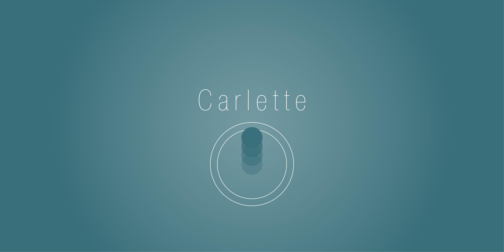 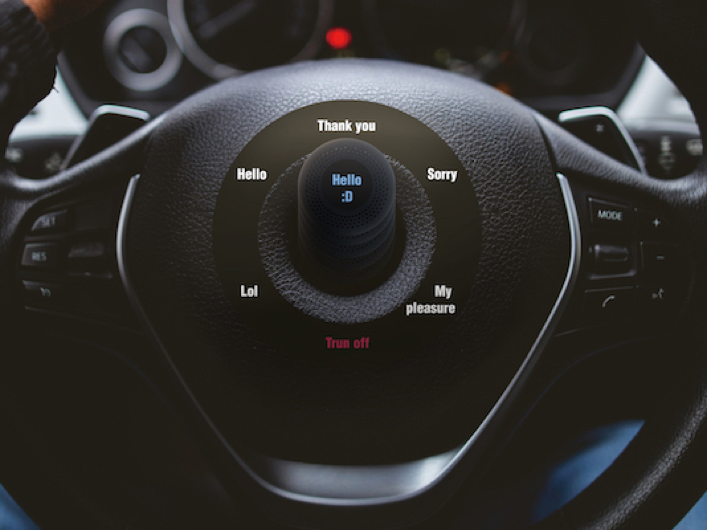Car, as a reflection of owner's taste and status, is much more than merely a vehicle. Currently, there are apps for car-lovers to chat and meet. However, it is more convenient if they can be acquainted with each other more directly. With the development of techniques mentioned above, car social networking may be a new trend of socialization. During this fragmented time, People can sit in their level 5 autonomous cars, and chat with people in other cars nearby, which will create a friendly atmosphere for drivers. However, currently there are certain dangers that cannot be ignored. The premise of car social networking is safety. The risk of interference should be minimized. Based on existing technology, people could communicate with their counterparts in other cars. Nevertheless, the ideal car social network couldn't be realized now.
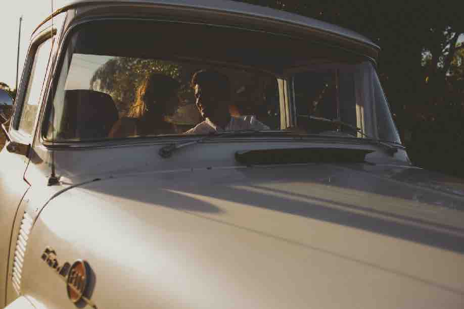 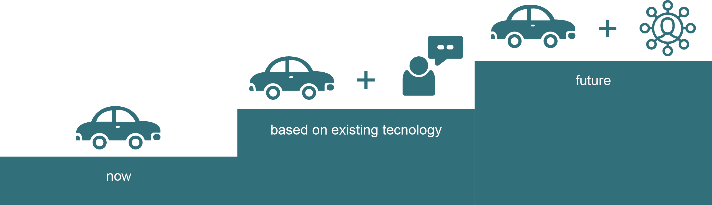In China: 35% of the drivers in China admitted that they had "road rage", according to a research by professor Yuqing Zhang. In the US:There are more than 1,200 incidents of road rage on average reported per year in the United States, and this figure is still rising. A number of studies have found that individuals with road rage were predominantly young (33 years old on average) and 96.6% male.
According to existing reaserches, road rage is caused by the intense pressure drivers faced, such as traffic jam, bad weather, accidents and others' road rage. There is also a belief that drivers need to concentrate when driving, which makes them easier to get tired, anxious and angry. Besides, the behaviors typically associated with road rage can be the result of a disorder known as intermittent explosive disorder that is recognized in the Diagnostic and Statistical Manual of Mental Disorders (DSM), according to an article published by the Associated Press.
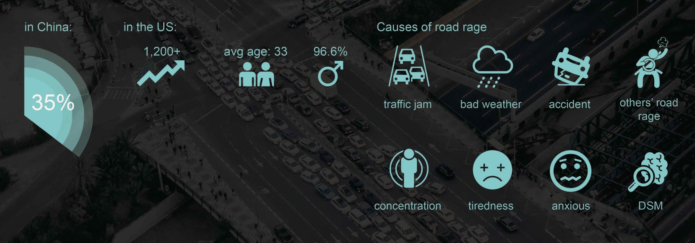Levels of Autonomous Vehicles:
Level 0: Automated system issues warnings and may momentarily intervene but has no sustained vehicle control.
Level 1 ("hands on"): Driver and automated system shares control over the vehicle.
Level 2 ("hands off"): The automated system takes full control of the vehicle (accelerating, braking, and steering).
Level 3 ("eyes off"): The driver can safely turn their attention away from the driving tasks, e.g. the driver can text or watch a movie.
Level 4 ("mind off"): As level 3, but no driver attention is ever required for safety, e.g. the driver may safely go to sleep or leave the driver's seat.
Level 5 ("steering wheel optional"): No human intervention is required. An example would be a robotic taxi.
Currently, some firms declare that they have already achieved the level 5 driving automation.
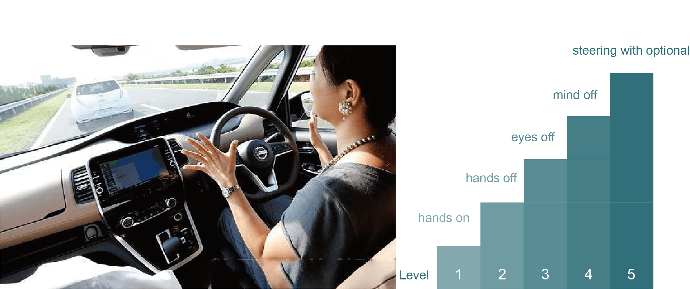Internet of Things(IoT)
The Internet of things (IoT) is the network of physical devices, vehicles, home appliances and other items embedded with electronics, software, sensors, actuators, and connectivity which enables these objects to connect and exchange data.
IoT is a foundation of smart home appliances, which can be also used in a car.
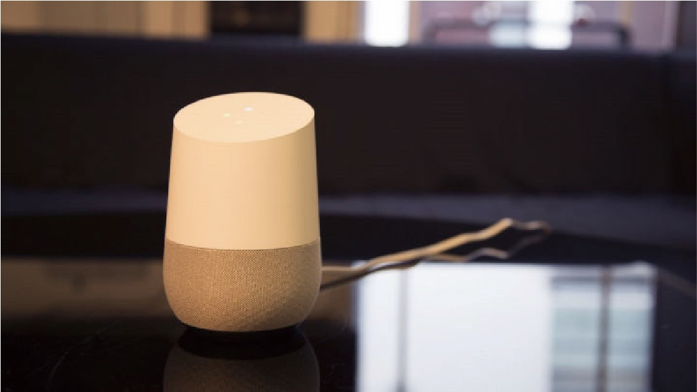Inspired by the chat wheel in Dota2, I hope to design a system allowing drivers to send messages only by pushing the controller at the center. They can choose five of the most frequently used greetings, and set the order.
Chat Wheel in Dota2 is a system designed to help players from different countries chat friendly. Users can set up 8 phrases in advance, and send them only by moving the mouse to different directions after pressing "y", which will automatically translated into different languages for different players. It allows players to send their message as soon as possible - they only have to remember the direction, instead of the exact position.
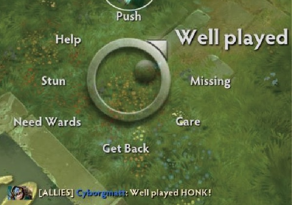A round display is better than other forms, according to ergonomics. The chat wheel minimized the disturbance during the game, and can be applied in a car as a convenient way of interaction.
VUI vs Chat wheel
VUI (Voice User Interface) makes human interaction with computers possible through a voice/speech platform in order to initiate an automated service or process. VUI is also generally belived to be the future interaction approach of intelligent home appliances and cars.
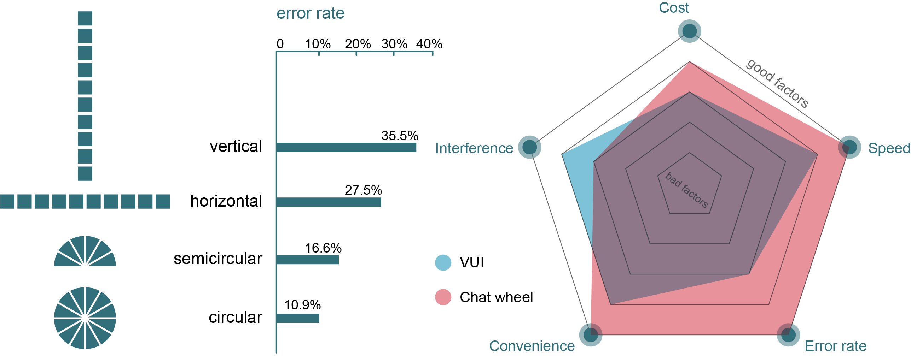Different drivers have different needs. Therefore, I asked 46 people to complete a questionnaire about the most frequently used greetings they thought while driving.
Almost all of the respondents chose the common greetings, such as "thank you". However, only drivers have more than 3 years driving experience tend to choose the options like merge and overtake.
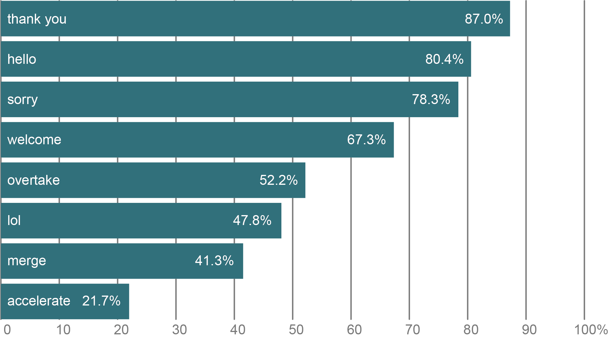This is a summary of the results in five interviews. The drivers are catagorized into two groups: novice and veteran.
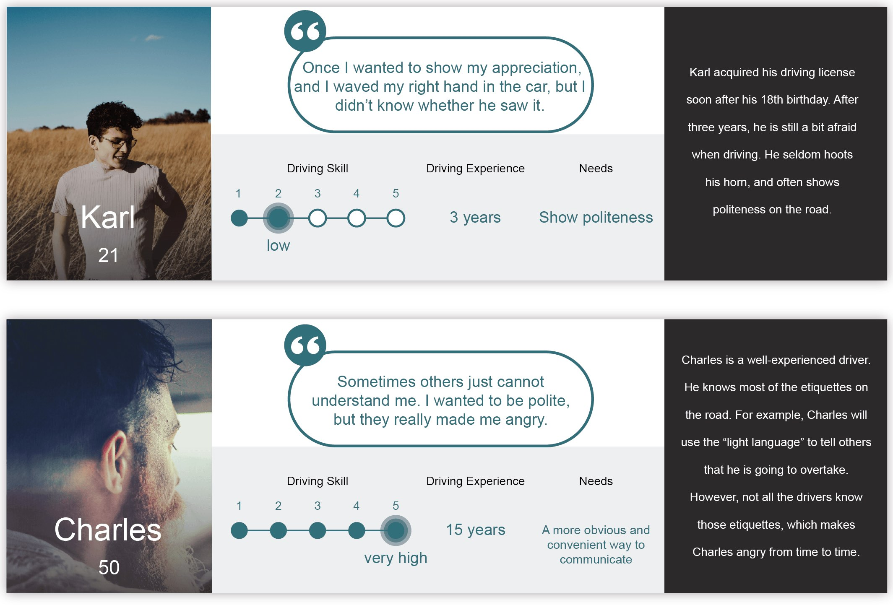Carlette is a combination of the words car and roulette. As a system designed not only to help those suffering from road rage, but also to become the first step of "car sociality",
it can alleviate drivers' pressure significantly, and create a friendly atmosphere.
Inspired by the chat wheel in Dota2, drivers can send messages to others only by pushing the controller at the center. They can choose five of the most frequently used greetings, and set the order.
This approach of interaction can facilitate the communication between drivers to large extent. Messages sent by others will be displayed on the central screen, after translated into the preset language. Besides, relevant emojis will also be displayed. If drivers do not want to be disturbed, they can also turn off the whole system easily.
Different drivers can use different greetings. For example, well-experienced drivers may have the need to remind others while overtaking. Of course, these greetings are all very friendly.
There are also some chances to appreciate non-motor vehicles, or pedestrians. When pushing the controller, the screens on the front and rear of the car will also display the greetings accordingly.
Carlette is designed to offer a better experience for EVERYONE on the road.
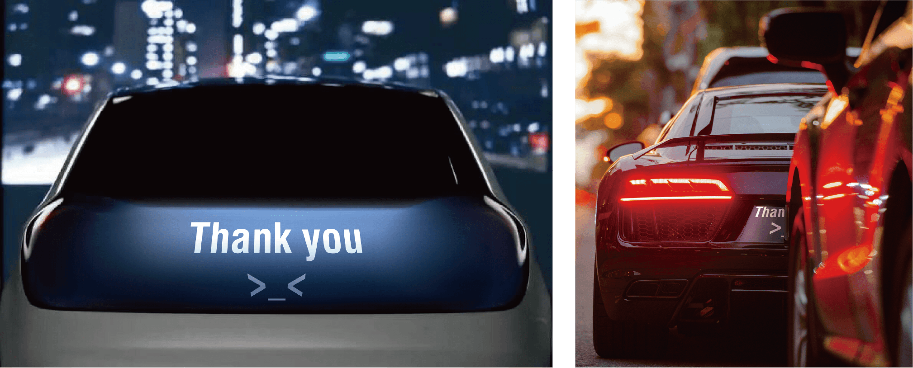Carlette, as a whole system, is extremely simplified and user-friendly.
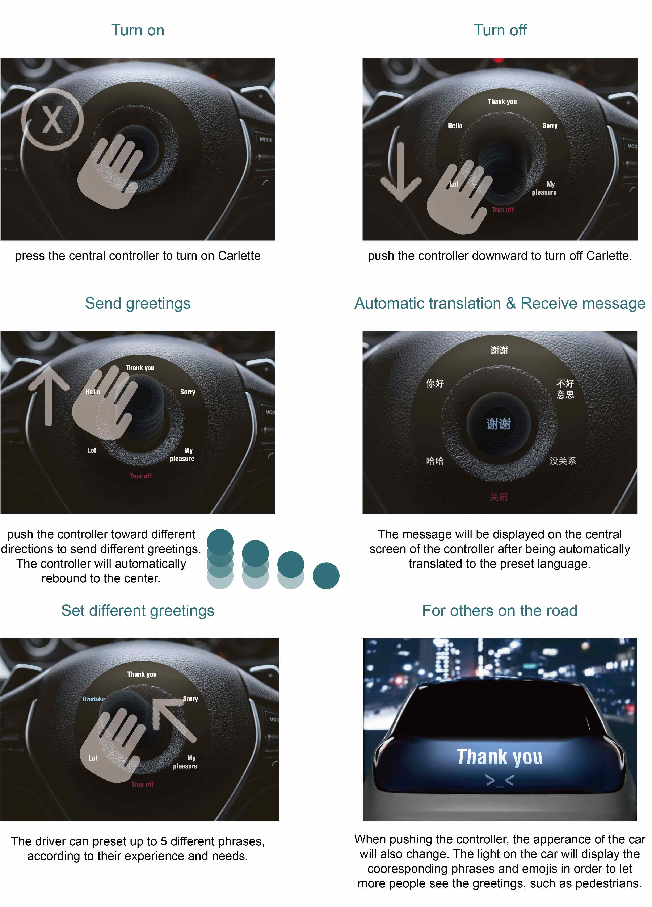With the development of autonomous vehicles, car sociality may be a brand-new lifestyle. Anyway, we have to sit in the car and have nothing to do, so why not make some friends? Carlette, which can be realized by current technology, is the first step of "car sociality".
It also conveys a positive lifestyle - facing the friends on the road with pleasure, instead of regarding them as enemies. Driving should be, and can be an enjoyment.
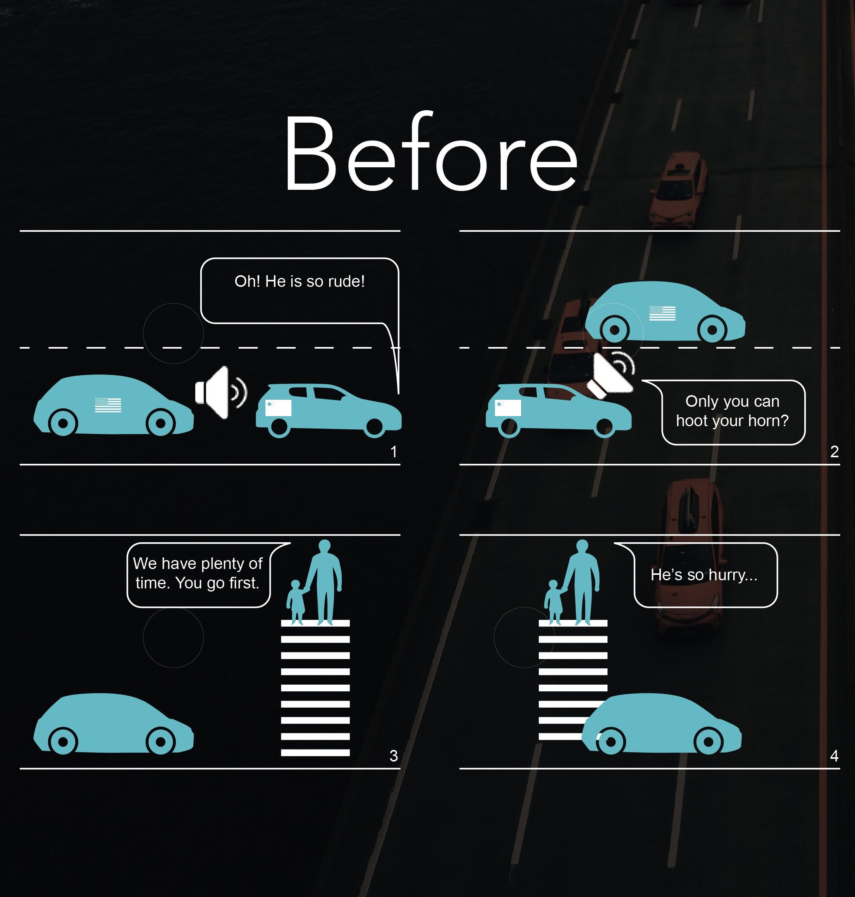 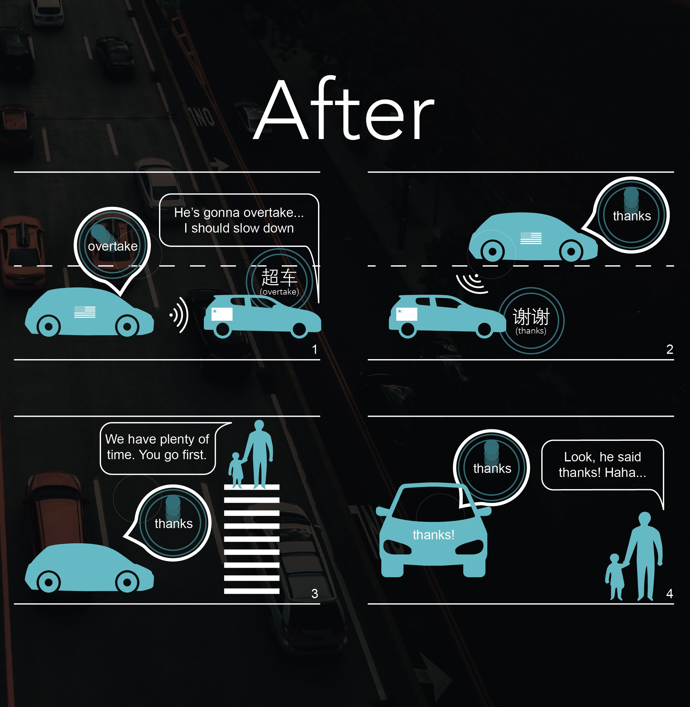